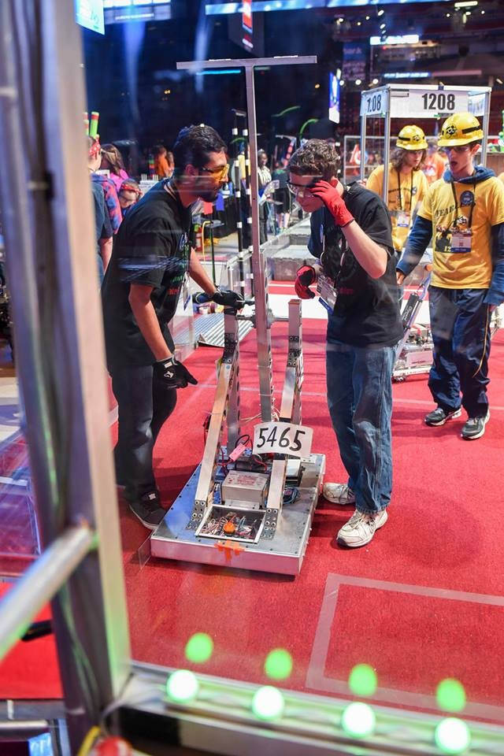
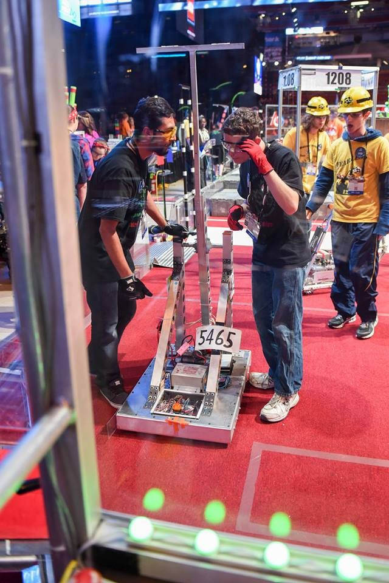

Robotics is Back
August 2015: The new Lego kits have been delivered. The mentors and students worked hard to assemble the new kits and prepare the boards. Several of the kids even started programming. We are off to what should be a great season!


The SSPF STEM/Robotics Program's approach is to build on the strengths, interests, skills, and talents of students who would not likely participate in traditional school activities such as after-school clubs and/or sports. The robotics program ignites an enthusiasm for discovery in Science, Technology, Engineering and (STEM) in students ages 9 to 18. Unlike other community programs, SSPF promotes an understanding of the importance that engineers and inventors play in the world's economy. Understanding of the role they will play in creating our future, as well as the income they can earn, they end up with a clear defined rationale and purpose. Each year, SSPF Robotics' elementary, junior high and community high school teams embark on adventurous challenges based on current and real word issues. Guided by professional team coaches and assisted by university and high school mentors. The students are engaged in hands-on real world engineering.
No matter what the student's subject interest, the program offers an opportunity for engagement. Whether it is by creativity, technology, or research, the program dares kids to test, explore, expand, or completely change feelings and interest for science, technology, engineering and mathematics and teaches them the skills continue their education in these exciting and rewarding careers. Classes are offered every Saturday mornings at Harford Sylvia EncinasElementary School, located at 700 N Hartford St. Chandler, AZ 85225. For additional information, contact Alberto L. Esparza at 480-310-2018.
August 2015: The new Lego kits have been delivered. The mentors and students worked hard to assemble the new kits and prepare the boards. Several of the kids even started programming. We are off to what should be a great season!
 
